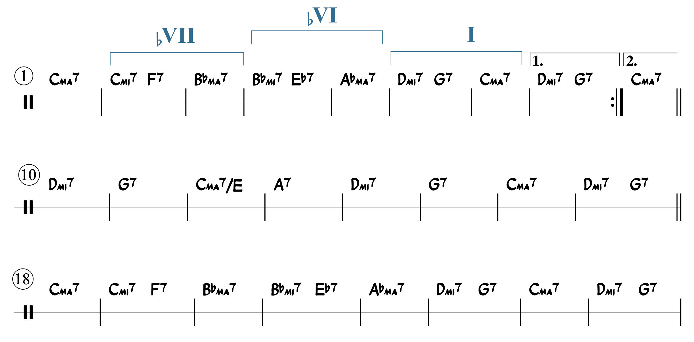
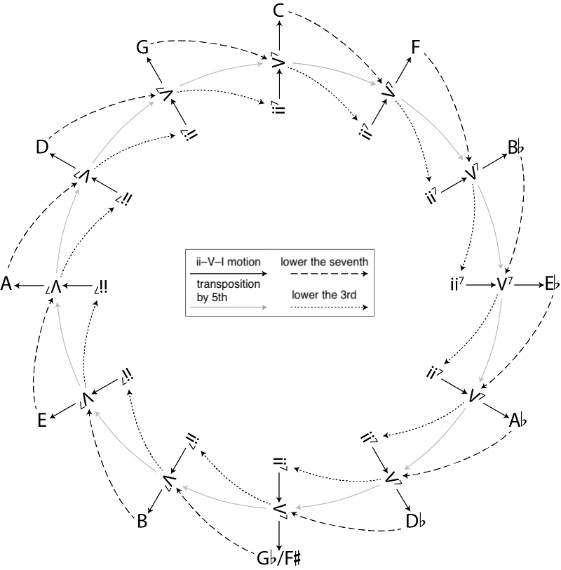
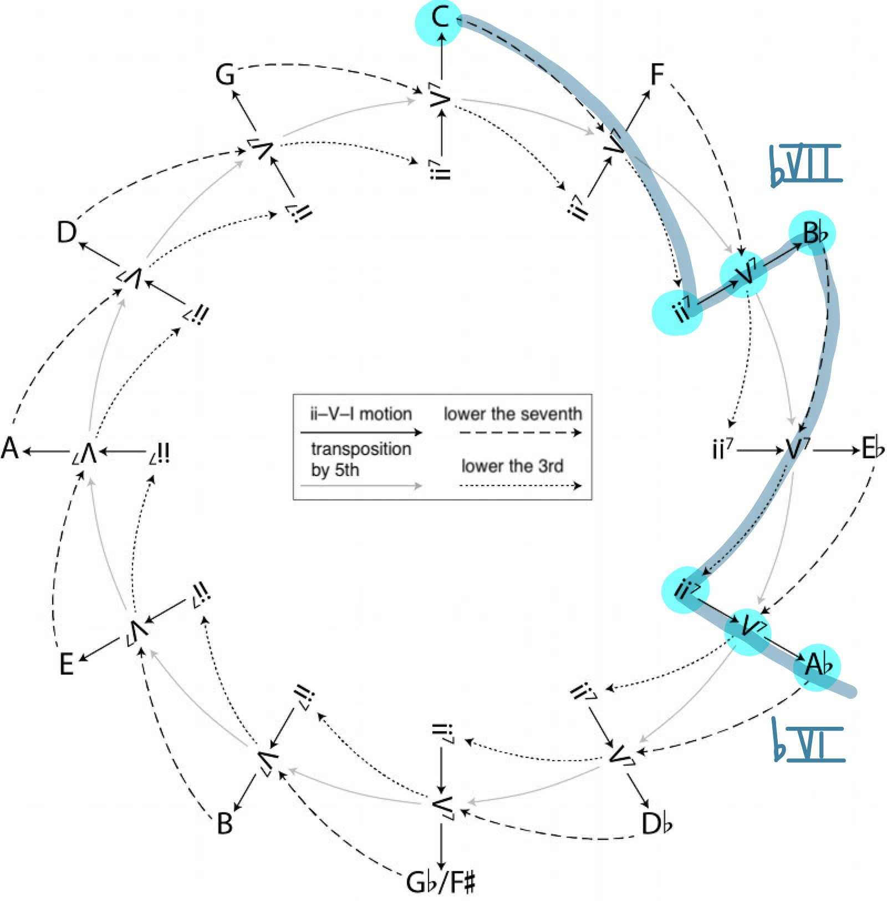

Open Music Theory：繁體中文版
ii–V–I
例1列出四首爵士曲最後的終止。觀察其中的和聲，應該能看出共同模式。你也可以透過本章Spotify播放清單聆聽這些曲子。
例1。〈Afternoon in Paris（巴黎午後）〉、〈All the Things You Are〉、〈My Funny Valentine〉與〈Joy Spring〉，在最後的終止都使用相似的和聲進行：ii–V–I。
這些譜例都以完全正格終止（PAC）結束。不過，共同點不只如此：每個PAC之前都有ii和弦。因此，這裡有三個和弦，彼此相鄰的根音都具有五度關係。
ii–V–I是爵士樂最重要的進行之一。不只在終止處常能找到它，它也會作為基本組件，出現在樂曲各處。若進行位於大調，如例1的片段，和弦性質依序為mi7–7–ma7。若曲子位於小調，調式改變會使和弦性質成為∅7–7–mi7；無論大調或小調，V和弦的三和弦部分都是大三和弦。例2整理了這兩種進行，以及典型的聲部連接方式。
例2。大、小調ii–V–I進行的典型和弦與聲部連接。
查看英文原文
Key Takeaways
- ii7–V7–Ima7 in major, or ii∅7–V7–i7 in minor, is a fundamentally important progression in traditional jazz.
- The ii–V–I progression can be identified through a combination of root motion by fifths plus its distinctive sequence of chord qualities (mi7–7–ma7 in major, or ∅7–7–mi7 in minor).
- Because this progression is so important to jazz, the concept of applied chords can expand to include applied subdominant chords—i.e., the ii chord.
- Incomplete ii–V–Is, i.e., ii–Vs, can also be identified because the combination of root motion and quality is so distinctive.
Example 1 shows final cadences from four jazz tunes. Look at the harmonies—a pattern should be apparent. (You can listen to the tunes through the the Spotify playlist for this chapter.)
Example 1. “Afternoon in Paris,” “All the Things You Are,” “My Funny Valentine,” and “Joy Spring” all share similar harmonic progressions at their final cadences: ii–V–I.
All the examples end in perfect authentic cadences (PACs). But the similarities don’t end there: each PAC is preceded by the ii chord. So we have three chords, each related to the next by fifth.
This ii–V–I progression is one of the most important progressions in jazz music. You can find it reliably at cadences, but also as a building block that occurs throughout a tune. When the progression occurs in a major key, as in the snippets in Example 1, the chord qualities of these chords are mi7–7–ma7. When the tune is in minor, the shift in mode changes the quality of the harmonies to ∅7–7–mi7 (the V chord is major whether you are in a major or minor key). Both of these progressions and a typical voice-leading pattern are summarized in Example 2.
Example 2. Prototypical harmonies and voice leadings in ii–V–I progressions, in both major and minor modes.
圖式（schema）是樂理中很有用的概念，本書在許多地方都會運用，例如流行音樂和聲。簡單說，圖式就是大腦能辨認的常見模式；即使某次呈現加入了變化，仍然能認出它。
ii–V–I進行就是一種圖式。它出現得如此頻繁，熟悉這種語彙的聽者，即使遇到不同形式也能認出來。例3提供幾種變化：在〈Misty〉中，ma7和弦換成加六音和弦；例1的〈My Funny Valentine〉也有這種情況。在〈Prelude to a Kiss〉中，通常採屬七性質的V和弦，改成以增三和弦為基礎的七和弦，小七音仍然保留。〈A Night in Tunisia〉也改變了V和弦，但這次是降低五音，而不是升高五音。
例3。即使加入變化，仍能辨認ii–V–I。
查看英文原文
ii–V–I as Schema
Schema is a useful concept in music theory, used in many ways within this book (pop harmony, for one). Put simply, schemas are common patterns our brains can recognize, even when variations are altering a specific presentation of that schema.
The ii–V–I progression is an example of a schema. It happens so frequently that informed listeners can recognize the schema in many formats. Some examples of alterations are given in Example 3. In “Misty,” the ma7 chord is replaced with a 6 chord (this occurred in “My Funny Valentine” in Example 2 also). In “Prelude to a Kiss,” the typically dominant-quality V chord is replaced with an augmented chord (the minor seventh is preserved). The V chord is altered in “A Night in Tunisia,” but this time, the fifth is lowered instead of raised.
Example 3. The ii–V–I is still recognizable, even if alterations occur.
ii–V–I圖式在爵士樂中無所不在，因此這種風格不只有副屬和弦，也可以有副ii和弦。換句話說，可以把整組ii–V–I用於主調以外的調性，使另一個和弦主音化。這些和弦性質與根音進行的關聯如此強烈，即使ii–V沒有真正解決到它的I，也足以產生ii–V的效果。
以〈Afternoon in Paris（巴黎午後）〉A段的其餘內容為例（例4）：它不只以ii–V–I結束，前面還有另外兩組ii–V–I。第一組把B♭大調主音化，在全曲C調中對應♭VII；接著一組把A♭大調主音化，對應C調的♭VI。
{kind=link}

- 圖中的♭VII、♭VI、I依全曲C調標示三組主音化目標；
- 三組括號內分別是Cmi7–F7–B♭ma7、B♭mi7–E♭7–A♭ma7、Dmi7–G7–Cma7。
- 圓圈1、10、18是小節號；
- 1.與2.表示第一、第二結尾。
第二行有Cma7/E–A7–Dmi7，斜線/E指定低音E。
和弦代號與反覆記號保留。
查看英文原文
Applied ii–Vs
An important marker of dominant-function chords is the chord’s quality. This is most obvious in the case of the dominant seventh quality, since it has “dominant” in the name. Fully diminished chords also have dominant function.
The compositional technique of applied chords capitalizes on the relationship between quality and function by taking dominant chords out of their key and dropping them into a new key. The applied dominant chords retain their function as dominant chords even when applied to a chord other than I (this concept is fully explained in the Tonicization chapter).
The omnipresence of ii–V–I as a schema in jazz means that in this style, we can have not only applied dominants, but applied ii chords as well. In other words, the entire ii–V–I progression can be used in keys other than the tonic key to tonicize another chord. The association between these chord qualities and root motions is so strong that a ii–V progression need not even resolve to its I chord to create the effect of a ii–V.
Take the rest of the A section of “Afternoon in Paris” as an example (Example 4). Not only does it end with a ii–V–I progression, but it begins with two other ii–V–Is: one tonicizing B♭ major, which is ♭VII in the key of C, immediately followed by another in A♭ major, which is ♭VI in the key of C.
ii–V空間
把所有可能的ii–V–I連起來，就能建立一個呈現這些進行的空間，並看出〈巴黎午後〉各組ii–V–I之間的關係。這個構想來自Michael McClimon（2017）；例5重現了他的「ii–V空間」。各組進行依五度圈排列，注意每組末端的音名字母；圓周上的每個和弦，前面都接著一組ii–V。
{kind=link}

- 圖例：ii–V–I motion＝ii–V–I進行（黑色實線）；
- transposition by 5th＝五度移調（灰色實線）；
- lower the seventh＝降低七音（長虛線）；
- lower the 3rd＝降低三音（短虛線）。
- 各同心層標記為ii7、V7與外圈I的根音；
- 調中心順時針依序C、F、B♭、E♭、A♭、D♭、G♭/F♯、B、E、A、D、G。
羅馬數字按各自調中心解讀，不全是C調的和弦。
例5共有四種箭頭，分別表示起點和弦如何變成箭頭另一端的和弦。兩種實線箭頭與根音進行有關：黑色箭頭連接同一組ii–V–I圖式內的和弦，灰色箭頭呈現五度圈上的關係。虛線箭頭則表示和弦性質的改變。長虛線表示只降低七音，其餘不變，所以它連接同根音的ma7和弦與屬七和弦；短虛線表示只降低三音，其餘不變，因此連接同根音的屬七和弦與mi7和弦。
譯註來源：McClimon 2017, Transformations in Tonal Jazz: ii–V Space, paragraphs1.10–1.11
{kind=link}

- 圖例：ii–V–I motion＝ii–V–I進行（黑色實線）；
- transposition by 5th＝五度移調（灰色實線）；
- lower the seventh＝降低七音（長虛線）；
- lower the 3rd＝降低三音（短虛線）。
- 各同心層標記為ii7、V7與外圈I的根音；
- 調中心順時針依序C、F、B♭、E♭、A♭、D♭、G♭/F♯、B、E、A、D、G。
羅馬數字按各自調中心解讀，不全是C調的和弦。
藍色筆畫追蹤Cma7改為Cmi7後的B♭大調ii–V–I，再由B♭ma7改為B♭mi7，接A♭大調ii–V–I。
手寫♭VII／♭VI為全曲C調中的主音化目標。
查看英文原文
ii–V space
By relating all possible ii–V–I motions together, we can come up with a space in which these progressions operate, and visualize how the ii–V–Is in “Afternoon in Paris” are related. This idea comes from Michael McClimon (2017), and his “ii–V space” is reproduced in Example 5. The space is arranged as the circle of fifths (note the letter names at the end of each progression), with each chord in the circle preceded by a ii–V.
There are four different variations of arrows in Example 5, and each signifies a different transformation from the first chord to the chord at the other end of the arrow. The two solid arrows have to do with root motion: the black arrows connect chords within a ii–V–I schema, while the gray arrows show the circle-of-fifths relationships. The dashed arrows show changes to chord quality. The larger dashes indicate that the chord is the same except that the seventh has been lowered, so each larger-dashed arrow connects a ma7 chord to a (dom)7 chord with the same root. The smaller dashes show that the chord is the same, but the third has been lowered: each smaller-dashed arrow connects a 7 chord to a mi7 chord with the same root.
Example 6 traces the progressions in “Afternoon in Paris” that were annotated in Example 4. Notice how the space helps to illustrate the logic of the progression: by transforming the preceding Ima7 chords into ii7 chords, it forces a modulation down by whole step.
透過ii–V圖式理解樂曲
Lee Morgan的〈Ceora〉包含半音和聲進行，用這個角度觀察，就更容易理解其中的邏輯。下方影片（例7）說明了McClimon原先提出的分析。
查看英文原文
Understanding a piece through the ii–V schema
The logic of a chromatic progression like the one in Lee Morgan’s “Ceora” becomes more intelligible when viewed through this lens. An analysis originally by McClimon is explained in the video below (Example 7).
Example 7. “Ceora” by Lee Morgan is entirely composed of ii–V–Is.
副ii–V很常出現在所謂的回轉進行（turnaround）中。廣義而言，回轉進行的作用，是把音樂帶回原來的主和弦；典型形式為I–vi–ii–V–I。運用副和弦概念，可以用V7/ii取代vi，因為兩者根音相同。也可以在這個V7之前，再加上它所屬調的ii，也就是ii/ii，可讀作「二級的二級」。如此一來，回轉進行中的ii，就由它自己的ii–V–(I)主音化。這種加入主音化的回轉進行，是很常見的變體（例8）。
例8。回轉進行圖式，有自然音與半音變化兩類版本。
- Aebersold, Jamey。1974。The II–V7–I Progression（《II–V7–I進行》）。第3卷，Jamey Aebersold Play-A-Long Series。印第安納州新奧爾巴尼：Jamey Aebersold Jazz。
- McClimon, Michael。2017。〈Transformations in Tonal Jazz: ii–V Space〉（〈調性爵士樂中的變換：ii–V空間〉）。Music Theory Online 23（1）。http://mtosmt.org/issues/mto.17.23.1/mto.17.23.1.mcclimon.html。
媒體出處與授權
- 〈巴黎午後〉和弦圖 © Megan Lavengood，採CC BY-SA（姓名標示－相同方式分享）授權。
- 〈McClimon的ii–V空間〉© Michael McClimon，由Megan Lavengood改編，採CC BY-SA（姓名標示－相同方式分享）授權。
- 〈巴黎午後〉的ii–V空間圖 © Megan Lavengood，採CC BY-SA（姓名標示－相同方式分享）授權。
查看英文原文
Turnarounds
A particularly common version of applied ii–Vs comes in what is called the turnaround. In the broadest sense, a turnaround is a progression that serves to loop back to the original tonic chord, and the typical progression that achieves this is I–vi–ii–V–I. Using the concept of applied chords, we can substitute a V7/ii for the vi chord, since they share the same root. But we can also precede that V7 with its ii chord—effectively, a ii/ii (two of two). Thus, the ii chord of the turnaround is tonicized with its own ii–V–(I) progression. This tonicized version of the turnaround is a very common variant (Example 8).
Example 8. The turnaround schema has diatonic and chromatic variants.
- Aebersold, Jamey. 1974. The II–V7–I Progression. Vol. 3. Jamey Aebersold Play-A-Long Series. New Albany, IN: Jamey Aebersold Jazz.
- McClimon, Michael. 2017. “Transformations in Tonal Jazz: ii–V Space.” Music Theory Online 23 (1). http://mtosmt.org/issues/mto.17.23.1/mto.17.23.1.mcclimon.html.
- ii–V–I worksheet (.pdf, .docx). Worksheet playlist Note that these lead sheets are not public domain and thus cannot be posted here; however, the lead sheets are not difficult to find if you search the internet or ask around.
- Composing with ii–V–I worksheet (.pdf, .mscz). This functions as a preparatory assignment for the Bebop Composition.
Media Attributions
- afternoon in paris © Megan Lavengood is licensed under a CC BY-SA (Attribution ShareAlike) license
- McClimon’s ii–V space © Michael McClimon adapted by Megan Lavengood is licensed under a CC BY-SA (Attribution ShareAlike) license
- ii–V space with “Afternoon in Paris” © Megan Lavengood is licensed under a CC BY-SA (Attribution ShareAlike) license